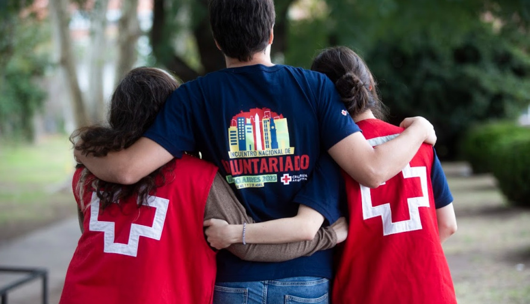
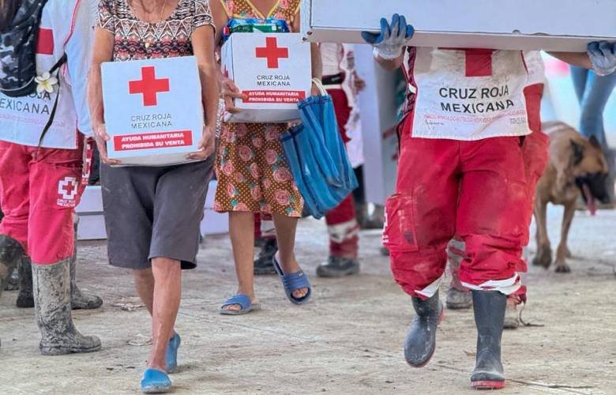

¿Cómo nació?
Tras presenciar el sufrimiento de miles de soldados heridos sin atención médica, Henry Dunant escribió el libro "Un recuerdo de Solferino". Sus ideas inspiraron la creación del Comité Internacional de la Cruz Roja y, posteriormente, la adopción del Primer Convenio de Ginebra para proteger a las víctimas de los conflictos armados.
La Cruz Roja en la actualidad
Hoy, la Cruz Roja está presente en más de 190 países brindando ayuda humanitaria, respuesta ante desastres, atención sanitaria, capacitación en primeros auxilios y apoyo a las comunidades más vulnerables.

Expansión por el mundo
Cuenta cómo el movimiento fue creciendo hasta estar presente en más de 190 países mediante las Sociedades Nacionales de la Cruz Roja y de la Media Luna Roja.

Valores y principios
Presenta los siete principios fundamentales: Humanidad, Imparcialidad, Neutralidad, Independencia, Voluntariado, Unidad y Universalidad.